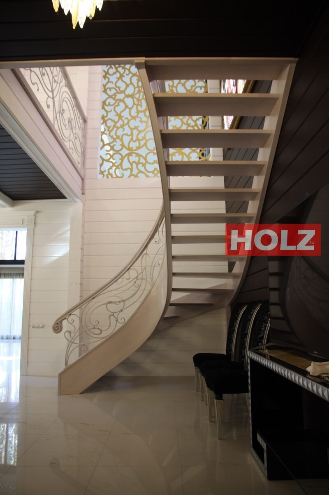
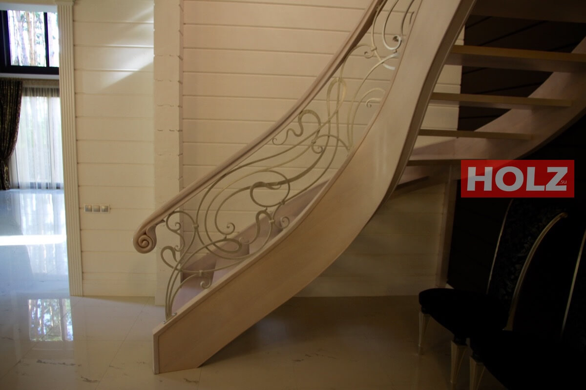
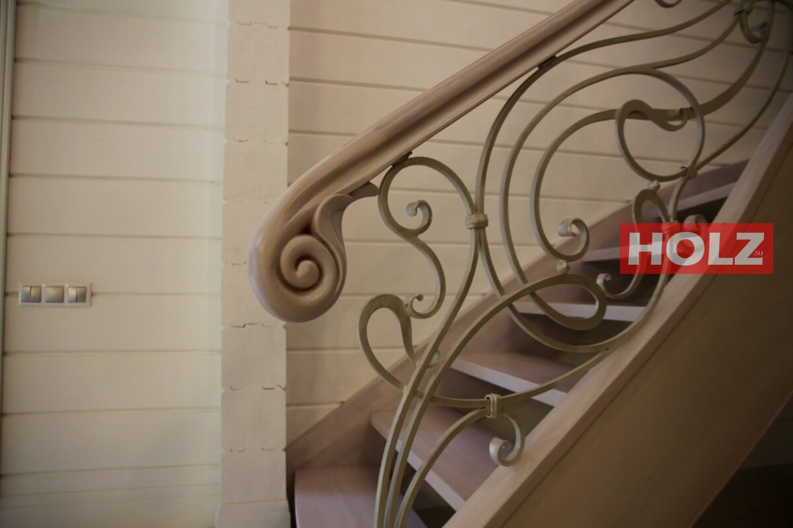
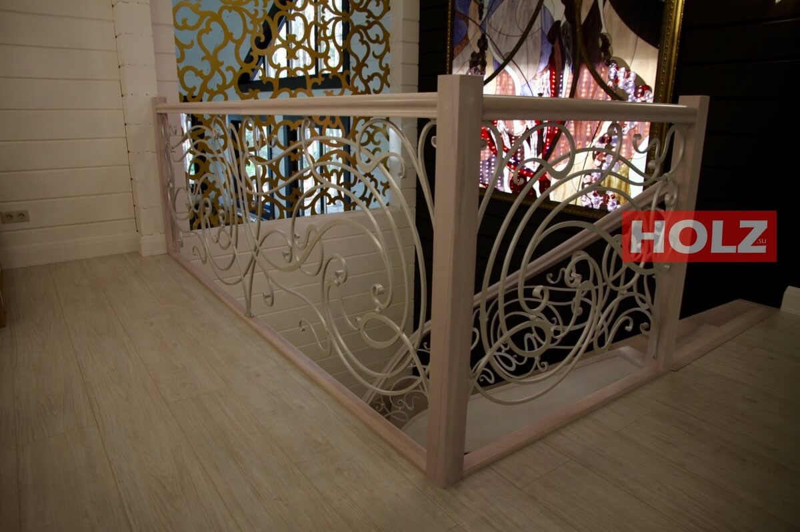

HOLZ
/Проект 14
8(8422)76-20-06
mail@holz.su
Гнутоклееная лестница.
Выполнен в минималистичном стиле.
Изготовлена из массива бука, с кованым ограждением.
01
Грутоклееная тетива не имеет никакой опоры, и для придания жесткости обе тетивы были сделаны толщиной 65 мм.
02
Без подступенков лестница выглядит лёгкой, хотя таковой не является — вес лестницы около 600 кг.

03
Поручень точно повторяет контур тетивы.

04
Окончание поручня — вырезанное на Ч П У.

05
Вид со второго этажа.
06
07
Балюстрада.

08

09
Время изготовления лестницы — 4 месяца.